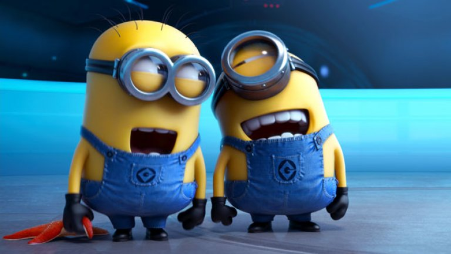
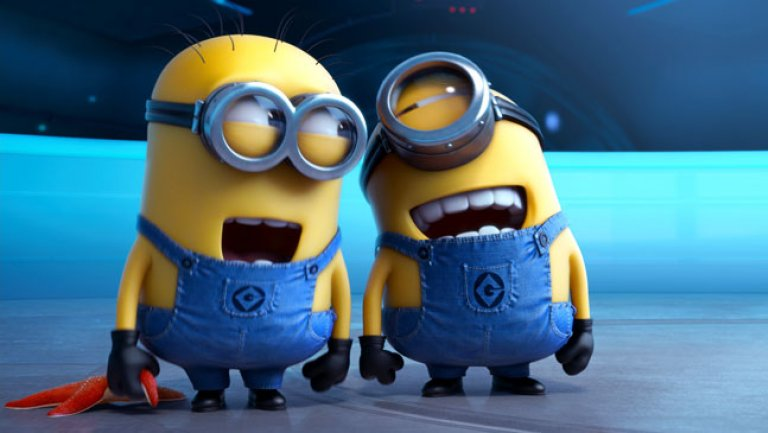

Fortnite is een battleroyale shooter waar het doel van het spel is dat je als laatste overblijft in je eentje of met je team. Verder zijn er speciale uitrustingen die je kan gebruiken om te winnen zo zijn er speciale klasses van wapens, zoals een gouden scar of een chug jug die al je levens teruggeeft na 15 seconden.